Chapter 7 · Part 2 — Hi, There
“That’s cool,” said Jack. “They work together, like the zebras and wildebeests and gazelles.”
“Yeah,” said Annie. “And she wants us to be her helpers. We have to scatter the bees and leave her the honeycomb.”
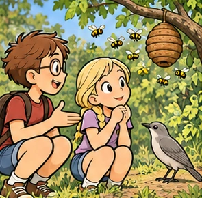
“How do we do that?” said Jack. He looked back at the book. It didn’t say how.
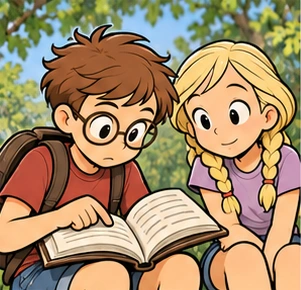
“Well, maybe we could wave those weeds at them,” said Annie. She pointed to some bright green plants that looked like giant fans.
Jack put his book and backpack down. He and Annie pulled up the weeds. They waved them near the tree, and the bees scattered.
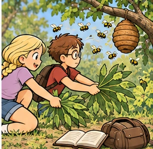
Next, Jack grabbed the tree branch and jiggled it. The hive fell to the ground and broke open.
Annie stooped and stuck her finger into the golden honeycomb.
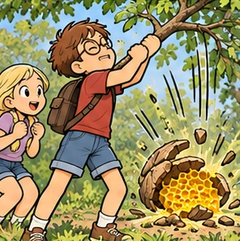
“Yummy,” she said when she tasted the honey. “Try it.”
Jack stuck his finger in the honeycomb, too. He licked off the golden honey. It was the sweetest honey he had ever tasted.
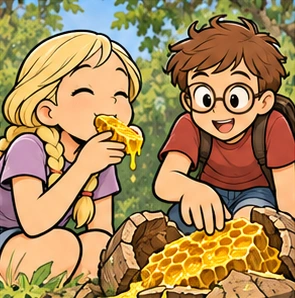
“Now the honey guide can get to her honeycomb,” said Annie.
“Yeah, but she’d better hurry. Before the bees come back,” said Jack.
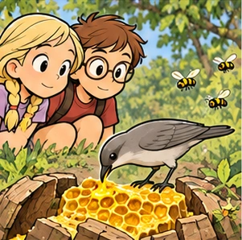
“It’s weird,” said Annie. “Honey’s so sweet and good. But to get it, you have to go past a lot of dangerous bees.”
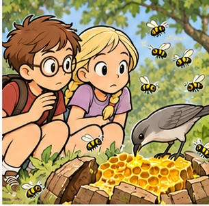
“Oh, man,” whispered Jack. “That’s it.”
“That’s what?” asked Annie.
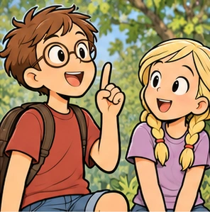
Jack said Morgan’s riddle:
I’m the color of gold and as sweet as can be. But beware of the danger that’s all around me. What am I?
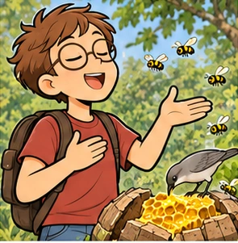
“I get it,” Annie whispered. “Honey … ”
“Honey,” said Jack, nodding and smiling. “That’s it. We’ve answered Morgan’s riddle. Let’s go home.”
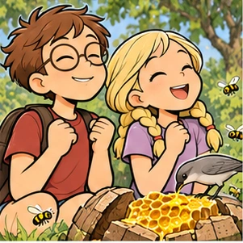
He stood up to leave. He gasped.
Standing in the shadows was a tall man with a spear and a curved sword hanging from his belt. His face was painted in fierce, bright colors.
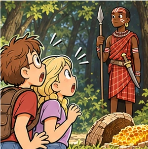
Jack knew at once what he was.
A Masai warrior.
“Hi, there,” Annie said in a small voice.
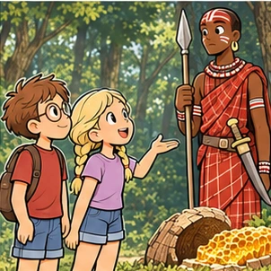